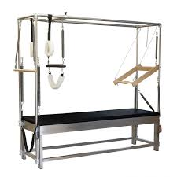
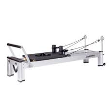
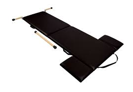
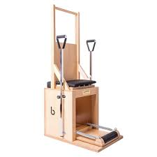
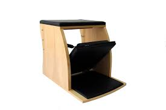

Nuestros equipos
En Cadi studio, contamos con equipos de primer nivel internacional donde vas a poder trabajar de manera completa con todos los equipamientos, te invitamos a conocerlos!
Cadillac
Usos:
- Flexibilidad y Estiramiento: Facilita estiramientos profundos.
- Fortalecimiento Muscular: Trabaja varios grupos musculares con resistencia de los resortes.
- Postura y Alineación: Mejora la postura y la alineación de la columna.
- Rehabilitación: Útil para la rehabilitación de lesiones y prevención.
- Coordinación: Mejora el control corporal y la coordinación.
- Versatilidad: Permite una variedad de ejercicios adaptados a diferentes niveles.
- Soporte y Estabilidad: Proporciona soporte adicional durante el entrenamiento.
- Resistencia Ajustable: Personaliza la resistencia según las necesidades.
- Fuerza y Flexibilidad: Desarrolla fuerza muscular y flexibilidad.
- Rehabilitación: Ideal para recuperación de lesiones.

Reformer
Usos
- Ejercicios de Flexibilidad: Realiza estiramientos y movimientos que aumentan el rango de movimiento.
- Fortalecimiento Muscular: Trabaja diversos grupos musculares utilizando la resistencia de los resortes.
- Mejora de la Postura: Ayuda a alinear y fortalecer la columna vertebral.
- Rehabilitación: Facilita ejercicios de bajo impacto para la recuperación de lesiones.
- Desarrollo del Core: Fortalece el abdomen y la zona lumbar.
- Versatilidad: Permite una amplia gama de ejercicios ajustables a diferentes niveles.
- Resistencia Ajustable: Ofrece resistencia variable mediante resortes, adaptándose a las necesidades del usuario.
- Soporte y Estabilidad: Proporciona soporte durante ejercicios complejos, reduciendo el riesgo de lesiones.
- Mejora de la Fuerza y Flexibilidad: Aumenta la fuerza muscular y la flexibilidad.
- Rehabilitación Efectiva: Ideal para la recuperación de lesiones debido a su bajo impacto y ajuste personalizado de la resistencia.

Mat
Usos
- Ejercicios de Flexibilidad: Facilita estiramientos y movimientos que mejoran el rango de movimiento.
- Fortalecimiento Muscular: Permite realizar una variedad de ejercicios para fortalecer diferentes grupos musculares.
- Mejora de la Postura: Ayuda a desarrollar una alineación correcta de la columna vertebral.
- Desarrollo del Core: Fortalece el abdomen y la zona lumbar a través de ejercicios enfocados en el core.
- Entrenamiento Funcional: Ideal para ejercicios que imitan los movimientos cotidianos y mejoran la funcionalidad del cuerpo.
- Accesibilidad: No requiere equipo especializado, lo que lo hace accesible para hacer ejercicio en casa o en estudios de Pilates.
- Versatilidad: Permite realizar una amplia variedad de ejercicios, desde estiramientos hasta fortalecimiento.
- Mejora del Control Corporal: Ayuda a desarrollar la conciencia del cuerpo y el control en el suelo.

High chair
Usos
- Fortalecimiento Muscular: Realiza ejercicios para fortalecer la parte inferior del cuerpo, especialmente las piernas y el core.
- Desarrollo del Equilibrio: Mejora la estabilidad y el equilibrio mediante ejercicios de carga y control en una superficie elevada.
- Flexibilidad y Estiramiento: Facilita estiramientos y movimientos que aumentan la flexibilidad de las piernas y la cadera.
- Rehabilitación: Ideal para la rehabilitación y la corrección postural, proporcionando soporte y resistencia ajustable.
- Entrenamiento Funcional: Simula movimientos cotidianos para mejorar la funcionalidad y el control del cuerpo.
- Desarrollo del Core: Refuerza la musculatura del abdomen y la zona lumbar a través de ejercicios que requieren estabilización.
- Mejora de la Postura: Ayuda a alinear la columna vertebral y a fortalecer la musculatura postural.
- Resistencia Ajustable: Ofrece resistencia mediante resortes que se pueden ajustar para adaptar el entrenamiento a diferentes niveles de habilidad.
- Versatilidad: Permite realizar una amplia variedad de ejercicios para diferentes grupos musculares y objetivos de entrenamiento.
- Fomento del Control Corporal: Mejora la coordinación y el control del cuerpo al realizar ejercicios que requieren precisión y equilibrio.

Wunda chair
Usos
- Fortalecimiento Muscular: Realiza ejercicios para desarrollar la fuerza en varias partes del cuerpo, especialmente en las piernas, el core y la parte superior del cuerpo.
- Entrenamiento del Core: Trabaja intensamente los músculos abdominales y lumbares, mejorando la estabilidad del core.
- Mejora del Equilibrio: Desafía el equilibrio y la coordinación al realizar ejercicios en una superficie que se mueve.
- Flexibilidad y Estiramiento: Facilita estiramientos y movimientos que aumentan la flexibilidad, particularmente en las piernas y el torso.
- Rehabilitación: Ofrece ejercicios de bajo impacto para la rehabilitación de lesiones y el fortalecimiento postural.
- Desarrollo del Core: Refuerza los músculos abdominales y la zona lumbar a través de una variedad de ejercicios que requieren estabilización.
- Versatilidad: Permite una gran variedad de ejercicios, desde fortalecimiento hasta estiramientos, gracias a su diseño ajustable.
- Resistencia Ajustable: Ofrece resistencia a través de resortes, que se pueden ajustar para adaptarse a diferentes niveles de habilidad y objetivos de entrenamiento.
- Mejora del Control y Coordinación: Desafía el equilibrio y la coordinación, mejorando la conciencia del cuerpo y el control motor.
- Compacta y Eficiente: Ocupa menos espacio en comparación con otros equipos de Pilates, haciendo que sea adecuada para espacios más pequeños.
